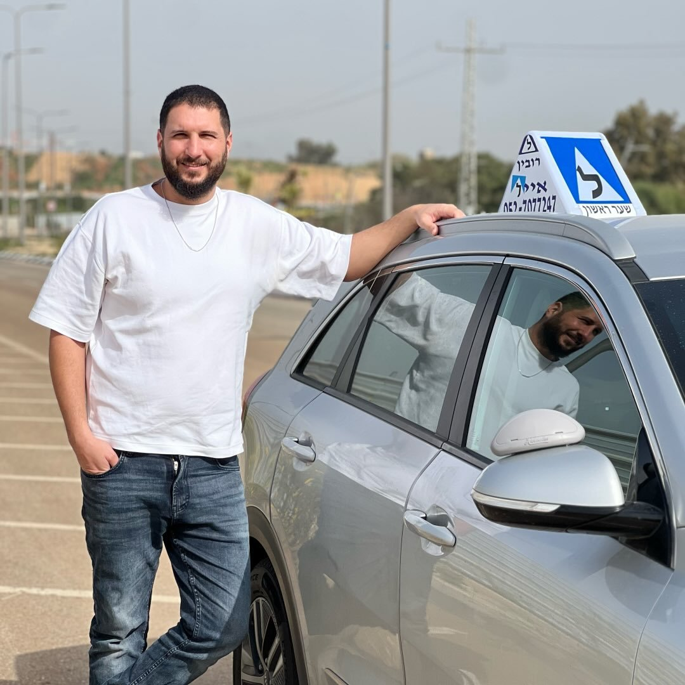

ללמוד.לדעת.לנהוג.
נהיגה נכונה מהיום הראשון.
לא רק בשביל הטסט.
[שם המורה], מורה לנהיגה ב[אזור], נס ציונה ובאר יעקב. ידני או אוטומט, איסוף מהבית, ושיעור ראשון בלי התחייבות.
5.021 ביקורות בגוגל- מורה מוסמך
- ידני ואוטומט
- איסוף מהבית או מבית הספר

רוב התלמידים מגיעים עם אותם חששות
ולכל אחד מהם יש תשובה פשוטה.
אני לחוץ/ה מאחורי ההגה
מתחילים לאט, ברחובות שקטים, ועולים לכבישים עמוסים רק כשמרגישים מוכנים. אף אחד לא צועק.
נכשלתי כבר בטסט
עוברים על מה שקרה בבוחן, מתרגלים בדיוק את הנקודות האלה ואת מסלולי הטסט באזור.
שלא ימשכו אותי בשיעורים
אחרי כל שיעור תדע/י איפה את/ה עומד/ת וכמה שיעורים נשארו בערך עד שמוכנים לטסט.
אני [שם פרטי], ואני מלמד נהיגה כבר [X] שנים, מורה לנהיגה ב[אזור]
[שתיים־שלוש שורות בגוף ראשון]
מתאים במיוחד ל
איסוף והחזרה ב
איסוף מהבית או מבית הספר
לא צריך להגיע לשום מקום. השיעור מתחיל בדלת.
תוכנית לפי הקצב שלך
מתמקדים במה שקשה לך: חניה, כיכרות, שילוב בנתיב, נסיעה בעיר.
מכירים את מסלולי הטסט
מתרגלים בדיוק את הצמתים והמקומות שהבוחנים אוהבים באזור.
רכב נוח וממוזג
[דגם הרכב], נוח לנהיגה, ממוזג ומטופל. נעים ללמוד בו גם באמצע הקיץ.
הדרך לרישיון, בארבע עצירות
הבירוקרטיה מבלבלת את כולם. בכל עצירה אני מסביר מה צריך לעשות ומתי.
טופס ירוק ותאוריה
הצהרת בריאות ובדיקת ראייה אצל אופטיקאי מורשה, ואז מבחן התאוריה. אחרי שעוברים אותו, מתחילים שיעורים.
שיעור ראשון
מכירים, בודקים איפה את/ה עומד/ת ובונים תוכנית שמתאימה לך.
שיעורים בקצב קבוע
לפחות 28 שיעורים לפי החוק, בקצב שמתאים לך.
הכנה וטסט
תרגול על מסלולי הטסט באזור וסימולציה של הבוחן. מגיעים מוכנים.
מה תלמידים כותבים עליו בגוגל
כמה מהביקורות, מילה במילה.
לפני שהוא מורה נהיגה טוב הוא קודם כל גם בן אדם טוב. מאוד ממליצה עליו, מי שהולך אליו זוכה גם ביחס, גם בגישה וגם להיות תלמיד טוב.
מורה אש, מלמד ברמה גבוהה. תמיד כיף להגיע לשיעורים איתו, ובזכותו עברתי טסט ראשון.
אייל מורה נהיגה מקצועי, סבלני ואכפתי. הוא מסביר בצורה ברורה, נותן ביטחון על הכביש ותמיד דואג שאבין כל פרט עד הסוף.
המורה שלי אייל היה מאוד רגוע והסביר הכל פשוט. הוא נתן לי ביטחון, ובזכותו עברתי טסט ראשון. ממליץ מאוד.
מורה מדהים!! קשוב וידע בדיוק איך להסביר כל דבר ונתן לי המון ביטחון על הכביש!
סבלני, רגוע, מסביר ברור ונותן ביטחון אמיתי על הכביש. כל שיעור באווירה טובה ומרגישים התקדמות כל הזמן.
וכל טסט שעובר עולה לאינסטגרם
תלמידים שעברו לאחרונה. לחיצה על כרטיס פותחת את הסרטון.
יש רגע אחד בשיעורי נהיגה ששווה את כל הדרך: הרגע שבו שומעים ׳עברת!׳ והפעם תורן של אופיר ועופרי לחגוג רישיון.
סבטלנה בחרה ללמוד אצלי, והיום התוצאה הגיעה: עברה טסט! היה לי כיף ללוות אותך בדרך לרישיון.
בהיילייט ״עברתם טסט״ יש עוד תלמידים שחוגגים רישיון, ובהיילייט ״הפרגון שלכם״ ההודעות שהם שולחים.
לפני שמתחילים
התשובות לשאלות שכולם שואלים. משהו אחר? שאלו בוואטסאפ.
מאיזה גיל אפשר להתחיל?
שיעורי נהיגה מגיל 16 וחצי, וטסט מעשי מגיל 16 ו־9 חודשים. את התאוריה כדאי להתחיל כבר בגיל 15 וחצי.
צריך לעבור תאוריה לפני השיעור הראשון?
כן. קודם טופס ירוק (הצהרת בריאות ובדיקת ראייה) ומבחן התאוריה, ואחרי שעוברים אותו מתחילים שיעורים.
כמה שיעורים צריך?
החוק מחייב לפחות 28 שיעורים לפני טסט ראשון. מעבר לזה זה תלוי בכל אחד: אחרי השיעור הראשון אוכל לתת הערכה אמיתית, ותקבל/י עדכון אחרי כל שיעור.
אוטומט או ידני?
אוטומט נלמד מהר יותר ומתאים לרוב הרכבים החדשים, אבל הרישיון תקף רק לאוטומט. ידני דורש יותר תרגול ומאפשר לנהוג בכל רכב. אני מלמד [אוטומט / ידני / שניהם], ונבחר יחד מה מתאים לך.
מאיפה האיסוף ובאילו שעות?
מהבית, מבית הספר או מהעבודה, ב[אזור], נס ציונה ובאר יעקב. שעות השיעורים: [שעות פעילות].את השעות קובעים יחד, לפי מה שנוח לך.
כמה זמן מראש צריך לקבוע שיעור?
כדאי לקבוע כשבוע מראש. ככה בטוח מוצאים שעה שנוחה לך.
השיעור הראשון במרחק הודעה
ממלאים שני פרטים, וההודעה נפתחת אצלך בוואטסאפ, מוכנה לשליחה.
או להתקשר: [טלפון]